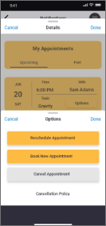
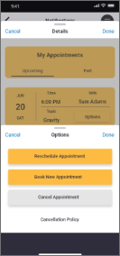

BeerWhiz!
For this project I took on the expert app challenge to explore the need for expert advice built into an app that gives users a simple, intuitive means to connect with an expert in a given field within moments so they can feel more informed and equally prepared to take on what ever problem presents itself in the task at hand.
My solution was BeerWhiz! A mobile app designed for all homebrewers, novice through expert, to connect on a social lever, albeit remote. The app is designed as a place for craft beer lovers and homebrewing enthusiasts to connect remotely to share and compare recipes, techniques, and give/get homebrewing advice.
Project Duration
14 weeks / 30+ screens
14 weeks / 30+ screens
User Centered Design
SWOT Analysis
Affinity Mapping
Empathy
Design
Research
My Role
Sole UX Designer
Sole UX Designer
Research
User Personas
User Flows
User Personas
User Flows
Journey Mapping
Sketching
Wireframing
Sketching
Wireframing
Design
Prototyping
Usability Testing
Prototyping
Usability Testing
Problem Statement:
Novice homebrewers need a way to find advice from other more
experienced homebrewers because the are having issues with
their brewing process.
Novice homebrewers need a way to find advice from other more
experienced homebrewers because the are having issues with
their brewing process.
Competitive Analysis:
According to the American Association of Homebrewers, more than 1 million people were brewing their own beer
at home. Of that 1 million, 94% of homebrewers were shopping at local stores. But where are they getting their
advice from when I comes to recipes and brewing techniques?
To know more about the field of craft beer and homebrewing I conducted a competitive analysis of apps that are
associated with craft beer and homebrewing. Because the nature of the expert app there were limited
competitors that offered instant expert advice. As a result I focused on two main competitors, Untappd and Brew Guru.
The purpose of the analysis was to find under served opportunities in the market and spot weaknesses in
the competitor's user experience thus allowing me to create a better user experience.
According to the American Association of Homebrewers, more than 1 million people were brewing their own beer
at home. Of that 1 million, 94% of homebrewers were shopping at local stores. But where are they getting their
advice from when I comes to recipes and brewing techniques?
To know more about the field of craft beer and homebrewing I conducted a competitive analysis of apps that are
associated with craft beer and homebrewing. Because the nature of the expert app there were limited
competitors that offered instant expert advice. As a result I focused on two main competitors, Untappd and Brew Guru.
The purpose of the analysis was to find under served opportunities in the market and spot weaknesses in
the competitor's user experience thus allowing me to create a better user experience.
User Interviews and Affinity Mapping:
I developed an effective script to conduct user interviews for gathering qualitative information to determine user needs and goals for the project. I interviewed 8 users to help me understand their knowledge of craft beer and homebrewing and how they go about getting their information and advice when it comes to craft beer and brewing. After conducting interviews, I organized the information gathered and created an affinity map to help me move forward with my user persona creation.
I developed an effective script to conduct user interviews for gathering qualitative information to determine user needs and goals for the project. I interviewed 8 users to help me understand their knowledge of craft beer and homebrewing and how they go about getting their information and advice when it comes to craft beer and brewing. After conducting interviews, I organized the information gathered and created an affinity map to help me move forward with my user persona creation.
User Personas
I took what I learned from my research and created users personas to help represent the different types of users that represent the target users of the BeerWhiz! app. Personas provide meaningful archetypes that allow designers to assess the development of their design throughout the design process.
I took what I learned from my research and created users personas to help represent the different types of users that represent the target users of the BeerWhiz! app. Personas provide meaningful archetypes that allow designers to assess the development of their design throughout the design process.
User Journey Map
Based off of the goals in my user personas, I compiled a list of user actions in to a timeline to represent a visualization of the process that one of my users may go through in order to accomplish their goal.
Based off of the goals in my user personas, I compiled a list of user actions in to a timeline to represent a visualization of the process that one of my users may go through in order to accomplish their goal.
Task Analysis and User Flow
Taking what I have learned from my user personas and user journey map I created a user flow. User flows are diagrams that layout and map the path that the user will take to achieve their goal. In this instance, the user wants to connect with another homebrewer to seek advice on the brewing process.
Taking what I have learned from my user personas and user journey map I created a user flow. User flows are diagrams that layout and map the path that the user will take to achieve their goal. In this instance, the user wants to connect with another homebrewer to seek advice on the brewing process.
User Story
As a novice homebrewer, I want to be able to connect instantly with other homebrewers, so that I can get advice when my batch doesn't come out according to the recipe.
As a novice homebrewer, I want to be able to connect instantly with other homebrewers, so that I can get advice when my batch doesn't come out according to the recipe.
Information Architecture
Based on the data compiled from the above research I organized the information into a site map focusing on page hierarchy rather than specific tasks and user actions. By doing so I have organized the app's content in a visual way explaining the hierarchy of the proposed navigation structure. It showcases the app's features and individual pages and gives a clearer view of how the app will look at each level.
Based on the data compiled from the above research I organized the information into a site map focusing on page hierarchy rather than specific tasks and user actions. By doing so I have organized the app's content in a visual way explaining the hierarchy of the proposed navigation structure. It showcases the app's features and individual pages and gives a clearer view of how the app will look at each level.
Usability Testing
I conducted remote moderated usability testing via Skype and Zoom. My objectives for testing were to gain insights from my target users to see if the design and content met the user's expectations. I also wanted to know if users could perform this tasks I proposed, observe their reactions and gain feedback to enhance the experience of using BeerWhiz!. Below is one scenario that touched on important core features of the app.
I conducted remote moderated usability testing via Skype and Zoom. My objectives for testing were to gain insights from my target users to see if the design and content met the user's expectations. I also wanted to know if users could perform this tasks I proposed, observe their reactions and gain feedback to enhance the experience of using BeerWhiz!. Below is one scenario that touched on important core features of the app.
Low-Fidelity Wireframes
High-Fidelity Wireframes
Design Documentation
Findings:
Users are mainly getting their information on craft beer and homebrewing from the internet.
Users are only using their native apps for information on trending beers and/or keeping track of beers they like.
Users are not utilizing social media platforms to find information about craft beer and brewing.
Even experienced users share a degree of apprehension when it comes to declaring their knowledge of homebrewing.
Users are mainly getting their information on craft beer and homebrewing from the internet.
Users are only using their native apps for information on trending beers and/or keeping track of beers they like.
Users are not utilizing social media platforms to find information about craft beer and brewing.
Even experienced users share a degree of apprehension when it comes to declaring their knowledge of homebrewing.
Possible Solutions:
Provide an app that users can find recommendations on craft beer and brewing without being overwhelmed by unnecessary functions of the app.
Provide an app that users can access recommendations from multiple sources that include user reviews, trending beers, and print sources.
Provide an app that users can instantly chat with an expert in the homebrewing community.
Provide an app that makes users feel comfortable about their level of craft beer and homebrewing knowledge.
Provide an app that users can find recommendations on craft beer and brewing without being overwhelmed by unnecessary functions of the app.
Provide an app that users can access recommendations from multiple sources that include user reviews, trending beers, and print sources.
Provide an app that users can instantly chat with an expert in the homebrewing community.
Provide an app that makes users feel comfortable about their level of craft beer and homebrewing knowledge.
Solution:
Create an app that enables homebrewers to connect with other
homebrewers and get instant advice for their homebrewing questions.
Create an app that enables homebrewers to connect with other
homebrewers and get instant advice for their homebrewing questions.


Scenario 1: You are measuring your original gravity and you notice your numbers don’t
match up with the numbers on the recipe. Use the app to search for an
expert brewer based on your topic, original gravity, and book a video call
with the expert.
Task1: From the community screen, navigate to the Expert Advice Forum
and search for an expert to help you with your question, original gravity.
Task2: Once you have found an expert, book a call and confirm the
appointment.
Task3: Now that you have booked the call and confirmed the date, join the
expert for your video call.
match up with the numbers on the recipe. Use the app to search for an
expert brewer based on your topic, original gravity, and book a video call
with the expert.
Task1: From the community screen, navigate to the Expert Advice Forum
and search for an expert to help you with your question, original gravity.
Task2: Once you have found an expert, book a call and confirm the
appointment.
Task3: Now that you have booked the call and confirmed the date, join the
expert for your video call.
Problem: Users want a quicker way to access the expert homebrewer.
Solution: After reviewing tele-health apps, I added a "call first available expert" feature that provides direct access to a homebrewing expert.
Solution: After reviewing tele-health apps, I added a "call first available expert" feature that provides direct access to a homebrewing expert.
Problem: Users want a way to modify their existing appointments.
Solution: I went back in to the app and add a feature in the calendar that allows the user to modify or change their existing appointments.
Solution: I went back in to the app and add a feature in the calendar that allows the user to modify or change their existing appointments.
 
